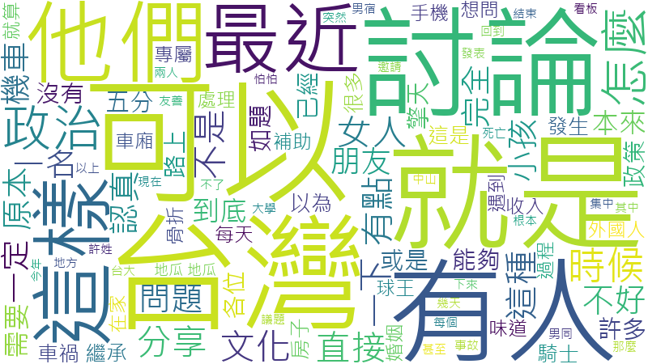

看見文山，慢活台北。
深度探索隱藏在都市叢林中的自然秘境。
私房景點
貓空、望遠亭與在地百年古蹟。
運動步道
仙跡岩、政大後山與樟樹步道全攻略。
在地美食
木柵鐵觀音特色餐與政大周邊隱藏版美食。
探索文山之美
課程研究報告
整合網路爬蟲與數據分析，呈現深度的在地化研究。
PTT Food 版趨勢大數據分析
研究對象：批踢踢實業坊 Food 看板近期熱門內容
分析文章總數
45 篇
食記佔比
73 %
熱門地區
台北
最新更新
2026/05/15
文章類型分佈
熱門美食地區
近期熱門關鍵字 (點擊關鍵字查看摘要)
關鍵字名稱
網站流量監控與 GA4 數據整合
研究主題：本網站成立至今的實際訪客互動數據與串接技術解析
歷史流量摘要 (截至 2026/05)
💡 數據洞察
數據顯示雖然目前的訪客母體人數不多，但使用者的「互動深度」表現優異。平均每位訪客在站內產生了約 6.5 頁的瀏覽記錄與將近 20 次的事件互動。這意味著來到網站的使用者確實對「文山之美」的內容產生了高度興趣，並積極探索了多個不同的景點與報告頁面。
GA4 串接技術與開發架構
1前端追蹤與客製化事件
網頁內嵌了 GA4 追蹤碼 (G-8TVS659RNQ)，並深度整合了 YouTube IFrame API。當使用者在首頁觀看「探索文山之美」影片時，JavaScript 會自動向 GA4 發送名為 「感興趣的使用者」 的自訂事件，精準定位潛在客群。
2後端 Data API 自動化
有別於傳統的人工查閱報表，本專案透過 Python 的 google-analytics-data 函式庫搭配 OAuth 憑證，實現從伺服器端自動化拉取歷史流量數據的功能，讓開發者能直接取得第一手報表。
3數據驅動的閉環設計
透過本次整合，我們完成了「建立優質內容 → 實作流量追蹤 → 數據獲取與視覺化」的完整閉環 (Closed-loop) 專案生命週期，充分展現現代化 Web 開發的 Data-driven 精神。
Dcard 閒聊板輿情大數據分析
研究對象：Dcard 閒聊板 (Talk) 最新熱門貼文輿情極性與關鍵詞分析
分析貼文總數
55 篇
累計按讚互動
3,408 次
累計留言討論
2,681 則
非負面情緒佔比
78.2 %
卡友輿論情緒分佈
熱門關鍵詞文字雲

Dcard 熱門詞彙提及頻次 (提及次數)
貼文情感極性分析明細
Dcard 語意網絡話題圖譜 (InfraNodus 方案B)
研究主題：Dcard 閒聊板熱門討論的語意關聯性與核心話題群集 (Topic Clustering)
分析語意節點 (Nodes)
20 個
語意關聯邊 (Edges)
31 條
核心話題群 (Clusters)
4 組
語意網絡密度
0.16
互動式話題語意網絡圖
話題群組分類 (Topic Clusters)
語意節點資訊 (Node Info)
未選取節點
請在左側的語意網絡中點選任何一個詞彙泡泡。InfraNodus 會為您動態解析該詞彙的語意重要程度，及其在 Dcard 討論脈絡中的關鍵影響。